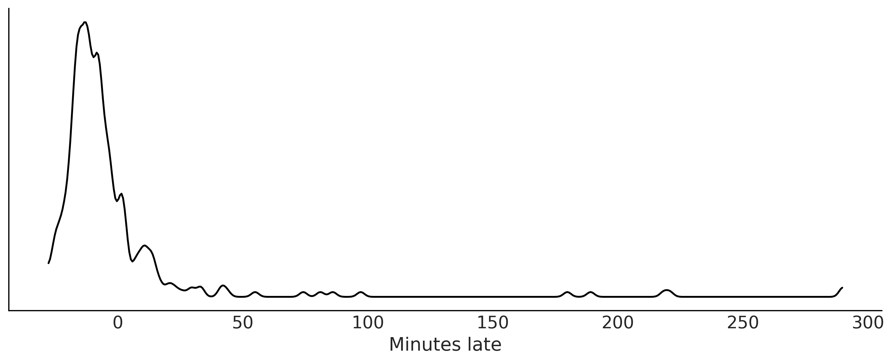
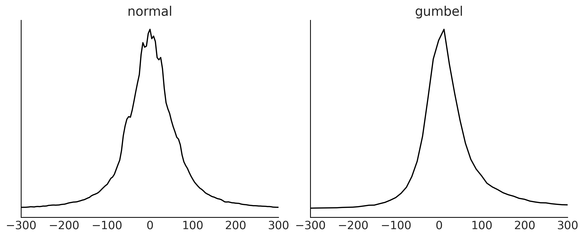
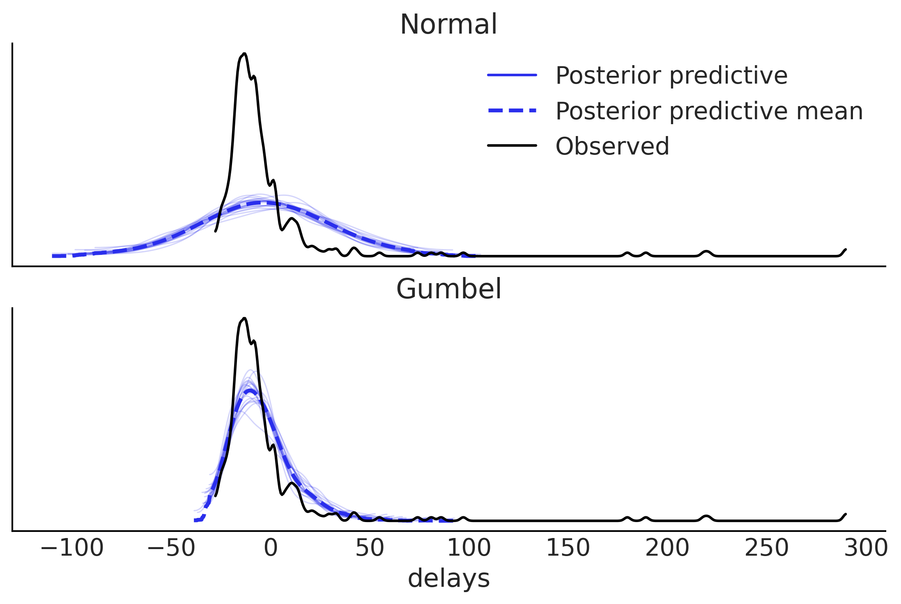
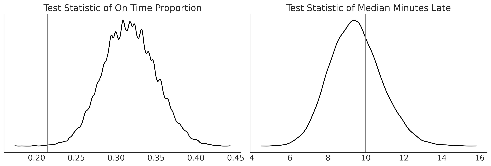
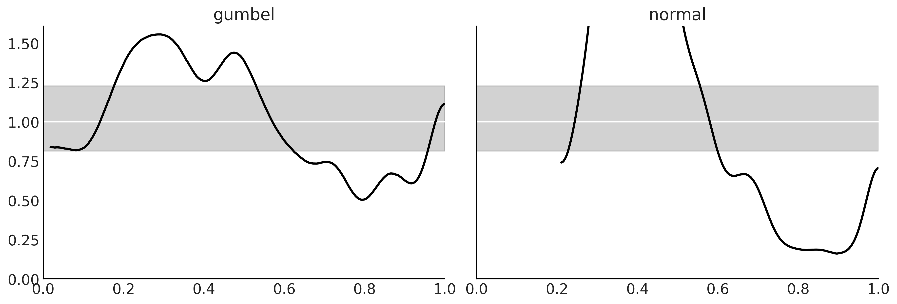
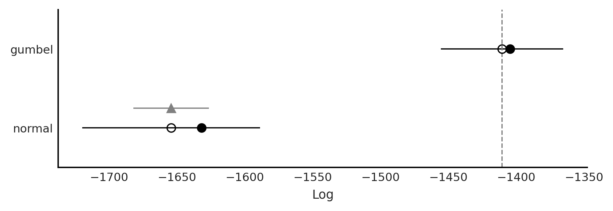
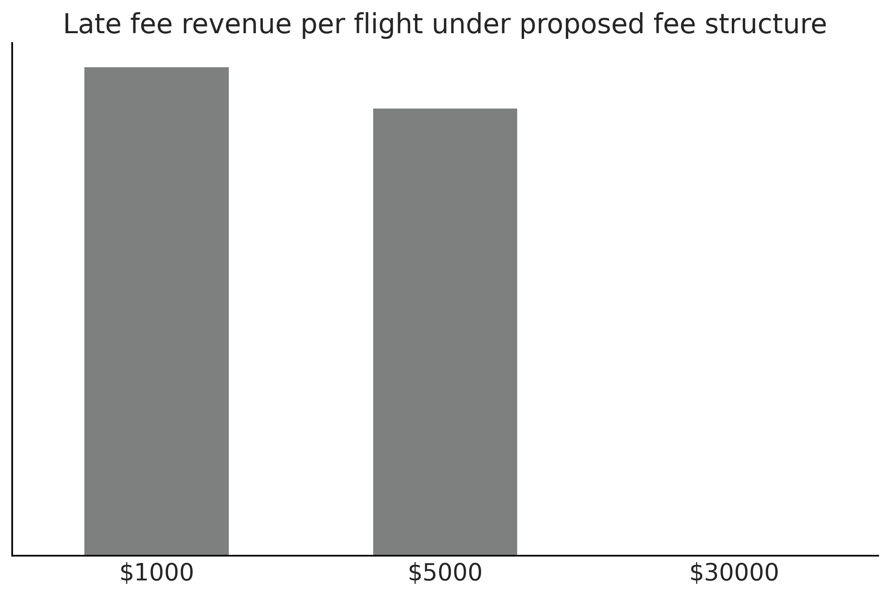
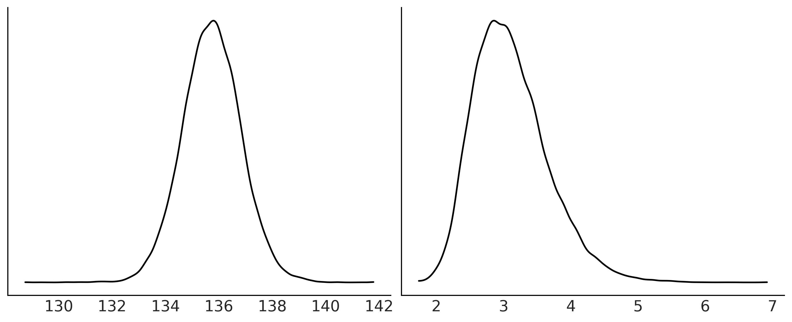
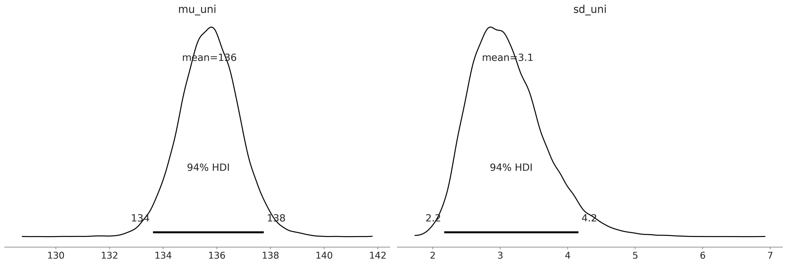

Chapter 9: End to End Bayesian Workflows¶
import pandas as pd
import arviz as az
import matplotlib.pyplot as plt
import pymc3 as pm
import numpy as np
import theano.tensor as tt
from scipy import stats, optimize
np.random.seed(seed=233423)
sampling_random_seed = 0
az.style.use("arviz-grayscale")
plt.rcParams['figure.dpi'] = 300
Load flight data¶
df = pd.read_csv("../data/948363589_T_ONTIME_MARKETING.zip", low_memory=False)
fig, ax = plt.subplots(figsize=(10,4))
msn_arrivals = df[(df["DEST"] == 'MSN') & df["ORIGIN"]
.isin(["MSP", "DTW"])]["ARR_DELAY"]
az.plot_kde(msn_arrivals.values, ax=ax)
ax.set_yticks([])
ax.set_xlabel("Minutes late")
plt.savefig('img/chp09/arrivaldistributions.png')

msn_arrivals.notnull().value_counts()
True 336
Name: ARR_DELAY, dtype: int64
try:
# This is the real code, just try except block to allow for the whole notebook tor execute
with pm.Model() as normal_model:
normal_mu = ...
normal_sd = ...
normal_delay = pm.SkewNormal("delays", mu=normal_mu,
sd=normal_sd, observed=msn_arrivals)
with pm.Model() as skew_normal_model:
skew_normal_alpha = ...
skew_normal_mu = ...
skew_normal_sd = ...
skew_normal_delays = pm.SkewNormal("delays", mu=skew_normal_mu, sd=skew_normal_sd,
alpha=skew_normal_alpha, observed=msn_arrivals)
with pm.Model() as gumbel_model:
gumbel_beta = ...
gumbel_mu = ...
gumbel_delays = pm.Gumbel("delays", mu=gumbel_mu,
beta=gumbel_beta, observed=msn_arrivals)
except:
pass
Airline Example: Picking Priors¶
samples = 1000
with pm.Model() as normal_model:
normal_sd = pm.HalfStudentT("sd",sigma=60, nu=5)
normal_mu = pm.Normal("mu", 0, 30)
normal_delay = pm.Normal("delays", mu=normal_mu, sd=normal_sd, observed=msn_arrivals)
normal_prior_predictive = pm.sample_prior_predictive()
with pm.Model() as gumbel_model:
gumbel_beta = pm.HalfStudentT("beta", sigma=60, nu=5)
gumbel_mu = pm.Normal("mu", 0, 20)
gumbel_delays = pm.Gumbel("delays", mu=gumbel_mu, beta=gumbel_beta, observed=msn_arrivals)
gumbel_predictive = pm.sample_prior_predictive()
fig, axes = plt.subplots(1, 2, figsize=(10, 4))
prior_predictives = {"normal":normal_prior_predictive, "gumbel": gumbel_predictive }
for i, (label, prior_predictive) in enumerate(prior_predictives.items()):
data = prior_predictive["delays"].flatten()
az.plot_dist(data, ax=axes[i])
axes[i].set_yticks([])
axes[i].set_xlim(-300, 300)
axes[i].set_title(label)
fig.savefig("img/chp09/Airline_Prior_Predictive.png")

Inference Diagnostics¶
with normal_model:
normal_delay_trace = pm.sample(random_seed=0, chains=2)
az.plot_rank(normal_delay_trace)
plt.savefig('img/chp09/rank_plot_bars_normal.png')
/var/folders/nf/ch8x562s5q30j7qbf07161qr0000gp/T/ipykernel_36222/700159645.py:2: FutureWarning: In v4.0, pm.sample will return an `arviz.InferenceData` object instead of a `MultiTrace` by default. You can pass return_inferencedata=True or return_inferencedata=False to be safe and silence this warning.
normal_delay_trace = pm.sample(random_seed=0, chains=2)
Auto-assigning NUTS sampler...
Initializing NUTS using jitter+adapt_diag...
Multiprocess sampling (2 chains in 4 jobs)
NUTS: [mu, sd]
100.00% [4000/4000 00:02<00:00 Sampling 2 chains, 0 divergences]
Sampling 2 chains for 1_000 tune and 1_000 draw iterations (2_000 + 2_000 draws total) took 8 seconds.
with gumbel_model:
gumbel_delay_trace = pm.sample(random_seed=0, chains=2, draws=10000)
az.plot_rank(gumbel_delay_trace)
plt.savefig('img/chp09/rank_plot_bars_gumbel.png')
/var/folders/nf/ch8x562s5q30j7qbf07161qr0000gp/T/ipykernel_36222/173437934.py:2: FutureWarning: In v4.0, pm.sample will return an `arviz.InferenceData` object instead of a `MultiTrace` by default. You can pass return_inferencedata=True or return_inferencedata=False to be safe and silence this warning.
gumbel_delay_trace = pm.sample(random_seed=0, chains=2, draws=10000)
Auto-assigning NUTS sampler...
Initializing NUTS using jitter+adapt_diag...
Multiprocess sampling (2 chains in 4 jobs)
NUTS: [mu, beta]
100.00% [22000/22000 00:07<00:00 Sampling 2 chains, 0 divergences]
Sampling 2 chains for 1_000 tune and 10_000 draw iterations (2_000 + 20_000 draws total) took 12 seconds.
The acceptance probability does not match the target. It is 0.880925781176837, but should be close to 0.8. Try to increase the number of tuning steps.
Posterior Plots¶
az.plot_posterior(normal_delay_trace)
plt.savefig('img/chp09/posterior_plot_delays_normal.png');
/Users/canyon/miniconda3/envs/bmcp/lib/python3.9/site-packages/arviz/data/io_pymc3.py:96: FutureWarning: Using `from_pymc3` without the model will be deprecated in a future release. Not using the model will return less accurate and less useful results. Make sure you use the model argument or call from_pymc3 within a model context.
warnings.warn(

az.plot_posterior(gumbel_delay_trace)
plt.savefig('img/chp09/posterior_plot_delays_gumbel.png');
/Users/canyon/miniconda3/envs/bmcp/lib/python3.9/site-packages/arviz/data/io_pymc3.py:96: FutureWarning: Using `from_pymc3` without the model will be deprecated in a future release. Not using the model will return less accurate and less useful results. Make sure you use the model argument or call from_pymc3 within a model context.
warnings.warn(
Posterior Predictive Plots¶
Normal Posterior Predictive¶
with normal_model:
normal_delay_trace = pm.sample(random_seed=0)
normal_post_pred_check = pm.sample_posterior_predictive(normal_delay_trace, random_seed=0)
normal_data = az.from_pymc3(trace=normal_delay_trace, posterior_predictive=normal_post_pred_check)
/var/folders/nf/ch8x562s5q30j7qbf07161qr0000gp/T/ipykernel_36222/2703936732.py:2: FutureWarning: In v4.0, pm.sample will return an `arviz.InferenceData` object instead of a `MultiTrace` by default. You can pass return_inferencedata=True or return_inferencedata=False to be safe and silence this warning.
normal_delay_trace = pm.sample(random_seed=0)
Auto-assigning NUTS sampler...
Initializing NUTS using jitter+adapt_diag...
Multiprocess sampling (4 chains in 4 jobs)
NUTS: [mu, sd]
100.00% [8000/8000 00:03<00:00 Sampling 4 chains, 0 divergences]
Sampling 4 chains for 1_000 tune and 1_000 draw iterations (4_000 + 4_000 draws total) took 12 seconds.
100.00% [4000/4000 00:02<00:00]
fig, ax = plt.subplots()
az.plot_ppc(normal_data, observed=True, num_pp_samples=20, ax=ax)
array([<AxesSubplot:xlabel='delays'>], dtype=object)
Gumbel Posterior Predictive¶
with gumbel_model:
gumbel_post_pred_check = pm.sample_posterior_predictive(gumbel_delay_trace, random_seed=0)
gumbel_data = az.from_pymc3(trace=gumbel_delay_trace, posterior_predictive=gumbel_post_pred_check)
100.00% [20000/20000 00:06<00:00]
gumbel_data
arviz.InferenceData
-
- chain: 2
- draw: 10000
- chain(chain)int640 1
array([0, 1])
- draw(draw)int640 1 2 3 4 ... 9996 9997 9998 9999
array([ 0, 1, 2, ..., 9997, 9998, 9999])
- mu(chain, draw)float64-11.73 -11.73 ... -11.22 -11.29
array([[-11.72557171, -11.73207922, -11.88802419, ..., -11.64281634, -12.32595792, -11.42473002], [-10.92065321, -11.26416853, -11.02976944, ..., -11.26652139, -11.22434128, -11.29282498]]) - beta(chain, draw)float6412.38 11.71 11.68 ... 11.36 12.14
array([[12.38449168, 11.70637 , 11.68447084, ..., 11.81750333, 10.59786036, 11.872241 ], [12.34101101, 12.2078464 , 11.72696672, ..., 12.01162972, 11.36040379, 12.14466958]])
- created_at :
- 2021-09-12T20:36:25.839189
- arviz_version :
- 0.11.2
- inference_library :
- pymc3
- inference_library_version :
- 3.11.4
- sampling_time :
- 12.14901614189148
- tuning_steps :
- 1000
<xarray.Dataset> Dimensions: (chain: 2, draw: 10000) Coordinates: * chain (chain) int64 0 1 * draw (draw) int64 0 1 2 3 4 5 6 7 ... 9993 9994 9995 9996 9997 9998 9999 Data variables: mu (chain, draw) float64 -11.73 -11.73 -11.89 ... -11.27 -11.22 -11.29 beta (chain, draw) float64 12.38 11.71 11.68 12.1 ... 12.01 11.36 12.14 Attributes: created_at: 2021-09-12T20:36:25.839189 arviz_version: 0.11.2 inference_library: pymc3 inference_library_version: 3.11.4 sampling_time: 12.14901614189148 tuning_steps: 1000xarray.Dataset -
- chain: 2
- draw: 10000
- delays_dim_0: 336
- chain(chain)int640 1
array([0, 1])
- draw(draw)int640 1 2 3 4 ... 9996 9997 9998 9999
array([ 0, 1, 2, ..., 9997, 9998, 9999])
- delays_dim_0(delays_dim_0)int640 1 2 3 4 5 ... 331 332 333 334 335
array([ 0, 1, 2, ..., 333, 334, 335])
- delays(chain, draw, delays_dim_0)float64-5.399 1.811 ... -1.191 -7.499
array([[[ -5.39918578, 1.81073061, -3.2946675 , ..., 0.89360396, 5.43627716, 5.35459601], [-15.23911725, -11.54325363, -4.33765608, ..., -2.32076306, -10.73548006, -9.68943265], [ -3.47878181, -23.31334863, 7.18210284, ..., 12.09764469, -6.9221263 , -26.47491538], ..., [ 19.62744842, -21.42421518, 10.95284844, ..., -9.7170958 , 5.33410712, -38.74991155], [ -8.76684918, 2.28239372, 0.91624425, ..., -0.84032094, -26.65570608, -21.9600546 ], [ 18.23822272, -23.22701567, -24.07056745, ..., 7.50796457, 9.2098428 , -10.16932641]], [[-24.83712942, 33.05757259, 1.9174968 , ..., -22.50163693, 6.55583182, -26.71170882], [-12.71876098, 13.26600696, -7.76853292, ..., -7.49009557, -21.32721744, -9.0693143 ], [ 13.42947946, -9.98206329, -18.8568962 , ..., -10.03342937, -18.1848369 , -5.00116948], ..., [ -4.27408812, -3.9121194 , 13.94023939, ..., -5.00406803, 40.13745819, -12.05430228], [-11.16846376, -17.60066848, 8.97162774, ..., 2.07825478, -9.53696267, 9.08149632], [ 16.84182 , -24.47666307, -18.03855121, ..., -1.47877651, -1.19125999, -7.49943362]]])
- created_at :
- 2021-09-12T20:36:26.604580
- arviz_version :
- 0.11.2
- inference_library :
- pymc3
- inference_library_version :
- 3.11.4
<xarray.Dataset> Dimensions: (chain: 2, draw: 10000, delays_dim_0: 336) Coordinates: * chain (chain) int64 0 1 * draw (draw) int64 0 1 2 3 4 5 6 ... 9994 9995 9996 9997 9998 9999 * delays_dim_0 (delays_dim_0) int64 0 1 2 3 4 5 6 ... 330 331 332 333 334 335 Data variables: delays (chain, draw, delays_dim_0) float64 -5.399 1.811 ... -7.499 Attributes: created_at: 2021-09-12T20:36:26.604580 arviz_version: 0.11.2 inference_library: pymc3 inference_library_version: 3.11.4xarray.Dataset -
- chain: 2
- draw: 10000
- delays_dim_0: 336
- chain(chain)int640 1
array([0, 1])
- draw(draw)int640 1 2 3 4 ... 9996 9997 9998 9999
array([ 0, 1, 2, ..., 9997, 9998, 9999])
- delays_dim_0(delays_dim_0)int640 1 2 3 4 5 ... 331 332 333 334 335
array([ 0, 1, 2, ..., 333, 334, 335])
- delays(chain, draw, delays_dim_0)float64-3.534 -3.902 ... -3.611 -3.627
array([[[-3.53439048, -3.90187187, -4.44373714, ..., -3.5389795 , -3.64047447, -3.62150726], [-3.48017249, -3.88477061, -4.47279415, ..., -3.48536658, -3.59787224, -3.57844796], [-3.47562643, -3.89313767, -4.48514072, ..., -3.4864381 , -3.60236629, -3.56959191], ..., [-3.49086635, -3.88248398, -4.46118802, ..., -3.49282386, -3.60169974, -3.58979295], [-3.37381154, -3.90245868, -4.58894488, ..., -3.40512615, -3.55286042, -3.473933 ], [-3.49952655, -3.87189115, -4.44334915, ..., -3.49370879, -3.59743382, -3.60396062]], [[-3.54681758, -3.85949204, -4.39170179, ..., -3.524434 , -3.61161769, -3.65690221], [-3.52917612, -3.8728786 , -4.41912024, ..., -3.51826236, -3.61382642, -3.63198187], [-3.49685557, -3.84621409, -4.42158693, ..., -3.47604226, -3.5740617 , -3.61658594], ..., [-3.51385048, -3.86725087, -4.4266184 , ..., -3.50260916, -3.60108788, -3.6203089 ], [-3.46256885, -3.84712231, -4.45279744, ..., -3.44811021, -3.55619575, -3.58436453], [-3.52368859, -3.87250843, -4.42336291, ..., -3.51364118, -3.61066393, -3.62684406]]])
- created_at :
- 2021-09-12T20:36:26.603084
- arviz_version :
- 0.11.2
- inference_library :
- pymc3
- inference_library_version :
- 3.11.4
<xarray.Dataset> Dimensions: (chain: 2, draw: 10000, delays_dim_0: 336) Coordinates: * chain (chain) int64 0 1 * draw (draw) int64 0 1 2 3 4 5 6 ... 9994 9995 9996 9997 9998 9999 * delays_dim_0 (delays_dim_0) int64 0 1 2 3 4 5 6 ... 330 331 332 333 334 335 Data variables: delays (chain, draw, delays_dim_0) float64 -3.534 -3.902 ... -3.627 Attributes: created_at: 2021-09-12T20:36:26.603084 arviz_version: 0.11.2 inference_library: pymc3 inference_library_version: 3.11.4xarray.Dataset -
- chain: 2
- draw: 10000
- chain(chain)int640 1
array([0, 1])
- draw(draw)int640 1 2 3 4 ... 9996 9997 9998 9999
array([ 0, 1, 2, ..., 9997, 9998, 9999])
- step_size_bar(chain, draw)float641.091 1.091 1.091 ... 1.223 1.223
array([[1.09064285, 1.09064285, 1.09064285, ..., 1.09064285, 1.09064285, 1.09064285], [1.22344934, 1.22344934, 1.22344934, ..., 1.22344934, 1.22344934, 1.22344934]]) - n_steps(chain, draw)float641.0 3.0 1.0 3.0 ... 3.0 3.0 3.0 3.0
array([[1., 3., 1., ..., 3., 3., 3.], [3., 3., 3., ..., 3., 3., 3.]]) - diverging(chain, draw)boolFalse False False ... False False
array([[False, False, False, ..., False, False, False], [False, False, False, ..., False, False, False]]) - lp(chain, draw)float64-1.413e+03 ... -1.412e+03
array([[-1412.9227924 , -1412.3920941 , -1412.50542257, ..., -1412.33552249, -1415.65781311, -1412.31284367], [-1412.89783359, -1412.53333496, -1412.631745 , ..., -1412.38831207, -1412.94068979, -1412.46520849]]) - process_time_diff(chain, draw)float640.000234 0.000497 ... 0.00041
array([[0.000234, 0.000497, 0.000235, ..., 0.000399, 0.000413, 0.000415], [0.000423, 0.000419, 0.000414, ..., 0.000413, 0.000411, 0.00041 ]]) - perf_counter_diff(chain, draw)float640.0002326 0.0005164 ... 0.00041
array([[0.00023264, 0.00051638, 0.00023488, ..., 0.00039887, 0.00041254, 0.00041564], [0.00042258, 0.00041874, 0.00041297, ..., 0.00041265, 0.00041198, 0.00041002]]) - max_energy_error(chain, draw)float64-0.2766 0.4516 ... 0.2247 0.5398
array([[-0.27655296, 0.45164466, 0.0393209 , ..., -0.32739683, 1.32713768, -0.72010233], [-0.60635466, 0.14810392, 0.48267292, ..., -0.19799664, 0.22472713, 0.53977908]]) - energy_error(chain, draw)float64-0.2766 -0.2273 ... 0.2067 -0.1135
array([[-0.27655296, -0.22733687, 0.0393209 , ..., -0.32739683, 0.58803353, -0.72010233], [-0.60635466, -0.06741715, 0.04420181, ..., -0.19799664, 0.20674227, -0.11350592]]) - step_size(chain, draw)float640.9806 0.9806 ... 1.161 1.161
array([[0.98061988, 0.98061988, 0.98061988, ..., 0.98061988, 0.98061988, 0.98061988], [1.16060659, 1.16060659, 1.16060659, ..., 1.16060659, 1.16060659, 1.16060659]]) - perf_counter_start(chain, draw)float6417.18 17.18 17.18 ... 24.1 24.1
array([[17.17765615, 17.17798979, 17.17860983, ..., 22.39940726, 22.39990572, 22.40041606], [18.81139102, 18.81191242, 18.81242865, ..., 24.10217288, 24.10268125, 24.10319091]]) - tree_depth(chain, draw)int641 2 1 2 2 2 2 2 ... 2 2 2 2 2 2 2 2
array([[1, 2, 1, ..., 2, 2, 2], [2, 2, 2, ..., 2, 2, 2]]) - energy(chain, draw)float641.414e+03 1.414e+03 ... 1.414e+03
array([[1413.56759498, 1413.66645284, 1412.5177695 , ..., 1413.15605989, 1417.31906307, 1415.53834653], [1414.68684947, 1413.31747536, 1414.64091951, ..., 1413.26976948, 1413.13730768, 1414.07819202]]) - acceptance_rate(chain, draw)float641.0 0.8449 0.9614 ... 0.8497 0.8504
array([[1. , 0.84489206, 0.96144213, ..., 1. , 0.50463615, 1. ], [0.94418981, 0.96036597, 0.78893606, ..., 0.95774922, 0.84973535, 0.85037355]])
- created_at :
- 2021-09-12T20:36:25.844879
- arviz_version :
- 0.11.2
- inference_library :
- pymc3
- inference_library_version :
- 3.11.4
- sampling_time :
- 12.14901614189148
- tuning_steps :
- 1000
<xarray.Dataset> Dimensions: (chain: 2, draw: 10000) Coordinates: * chain (chain) int64 0 1 * draw (draw) int64 0 1 2 3 4 5 ... 9995 9996 9997 9998 9999 Data variables: (12/13) step_size_bar (chain, draw) float64 1.091 1.091 1.091 ... 1.223 1.223 n_steps (chain, draw) float64 1.0 3.0 1.0 3.0 ... 3.0 3.0 3.0 diverging (chain, draw) bool False False False ... False False lp (chain, draw) float64 -1.413e+03 ... -1.412e+03 process_time_diff (chain, draw) float64 0.000234 0.000497 ... 0.00041 perf_counter_diff (chain, draw) float64 0.0002326 0.0005164 ... 0.00041 ... ... energy_error (chain, draw) float64 -0.2766 -0.2273 ... 0.2067 -0.1135 step_size (chain, draw) float64 0.9806 0.9806 ... 1.161 1.161 perf_counter_start (chain, draw) float64 17.18 17.18 17.18 ... 24.1 24.1 tree_depth (chain, draw) int64 1 2 1 2 2 2 2 2 ... 2 2 2 2 2 2 2 2 energy (chain, draw) float64 1.414e+03 1.414e+03 ... 1.414e+03 acceptance_rate (chain, draw) float64 1.0 0.8449 ... 0.8497 0.8504 Attributes: created_at: 2021-09-12T20:36:25.844879 arviz_version: 0.11.2 inference_library: pymc3 inference_library_version: 3.11.4 sampling_time: 12.14901614189148 tuning_steps: 1000xarray.Dataset -
- delays_dim_0: 336
- delays_dim_0(delays_dim_0)int640 1 2 3 4 5 ... 331 332 333 334 335
array([ 0, 1, 2, ..., 333, 334, 335])
- delays(delays_dim_0)float64-14.0 1.0 10.0 ... -9.0 -5.0 -17.0
array([-14., 1., 10., -15., -19., -4., -11., 15., 13., 41., -14., -25., -5., -19., -23., -15., -5., -10., -13., 2., -1., 8., -7., -13., -3., -2., -6., -6., -5., -3., -2., 3., 1., 5., -7., 7., -2., -3., -7., -10., -9., -6., 20., -9., 30., -12., -2., -8., -6., 11., 13., -5., -23., -11., -12., 3., -16., 23., -2., -14., -8., -11., 3., -23., -6., -15., -10., 55., -4., -1., -14., -19., 11., -15., -12., -18., -14., 8., 11., 6., 0., -19., -23., -11., -20., -20., -22., -9., 6., -17., 2., -15., -13., -13., -20., -18., -15., -13., -25., -5., -9., -2., -25., -5., -5., -21., 97., -14., -19., -28., -17., 26., 3., -8., 2., 8., 12., -18., -16., -16., -8., 1., 3., -4., -8., 8., -17., 44., -15., -13., -24., -16., -3., -10., -8., -8., -21., -13., -9., -13., -20., -7., -9., -16., -16., -23., -17., -16., -12., -22., -18., -7., -18., -21., -11., -11., -13., 290., 218., -21., -20., -8., -14., -17., 221., -9., -12., -8., -3., -13., -7., 3., 1., 2., 33., -6., -10., -9., 1., 0., 180., 81., -12., -26., -11., -19., -13., -5., -12., -6., -15., -14., 1., 0., -8., -5., -4., 0., -20., -13., -10., -25., -10., -19., -4., -23., -16., -7., -16., 12., 15., 11., -9., 13., -7., 2., -14., -10., -17., -15., -25., -25., -14., -16., -27., -13., -7., -17., -14., 86., -24., -17., -16., 10., 1., -18., 189., 3., -10., -11., -13., -9., -15., -4., -9., 17., -18., -9., -13., -17., -9., -15., -16., -13., -11., -7., -8., -15., 33., -24., 17., 10., 4., -10., -3., -2., 42., -5., 14., 20., -11., -14., -8., -7., 29., -12., -14., -7., -18., 14., 14., -22., -5., -19., -15., -18., -19., -9., -16., -12., -12., -12., -6., -11., -8., -18., -12., -16., -7., -14., -15., -3., -8., 9., -13., -15., -10., 9., -18., 22., -11., -17., -17., -2., -12., -25., 3., -12., 74., -17., -7., -14., -8., -8., -12., 0., -7., -6., -21., -16., -15., -2., -13., -9., -5., -17.])
- created_at :
- 2021-09-12T20:36:26.606936
- arviz_version :
- 0.11.2
- inference_library :
- pymc3
- inference_library_version :
- 3.11.4
<xarray.Dataset> Dimensions: (delays_dim_0: 336) Coordinates: * delays_dim_0 (delays_dim_0) int64 0 1 2 3 4 5 6 ... 330 331 332 333 334 335 Data variables: delays (delays_dim_0) float64 -14.0 1.0 10.0 ... -9.0 -5.0 -17.0 Attributes: created_at: 2021-09-12T20:36:26.606936 arviz_version: 0.11.2 inference_library: pymc3 inference_library_version: 3.11.4xarray.Dataset
fig, ax = plt.subplots(2,1, sharex=True)
az.plot_ppc(normal_data, observed=False, num_pp_samples=20, ax=ax[0], color="C4")
az.plot_kde(msn_arrivals, ax=ax[0], label="Observed");
az.plot_ppc(gumbel_data, observed=False, num_pp_samples=20, ax=ax[1], color="C4")
az.plot_kde(msn_arrivals, ax=ax[1], label="Observed");
ax[0].set_title("Normal")
ax[0].set_xlabel("")
ax[1].set_title("Gumbel")
ax[1].legend().remove()
plt.savefig("img/chp09/delays_model_posterior_predictive.png")

Test Statistics¶
gumbel_late = gumbel_data.posterior_predictive["delays"].values.reshape(-1, 336).copy()
dist_of_late = (gumbel_late > 0).sum(axis=1) / 336
fig, axes = plt.subplots(1,2, figsize=(12,4))
gumbel_late = gumbel_data.posterior_predictive["delays"].values.reshape(-1, 336).copy()
dist_of_late = (gumbel_late > 0).sum(axis=1) / 336
az.plot_dist(dist_of_late, ax=axes[0])
percent_observed_late = (msn_arrivals > 0).sum() / 336
axes[0].axvline(percent_observed_late, c="gray")
axes[0].set_title("Test Statistic of On Time Proportion")
axes[0].set_yticks([])
gumbel_late[gumbel_late < 0] = np.nan
median_lateness = np.nanmedian(gumbel_late, axis=1)
az.plot_dist(median_lateness, ax=axes[1])
median_time_observed_late = msn_arrivals[msn_arrivals >= 0].median()
axes[1].axvline(median_time_observed_late, c="gray")
axes[1].set_title("Test Statistic of Median Minutes Late")
axes[1].set_yticks([])
plt.savefig("img/chp09/arrival_test_statistics_for_gumbel_posterior_predictive.png")

LOO PIT Comparison¶
_, axes = plt.subplots(1, 2, figsize=(12, 4), sharey=True)
for label, model, ax in zip(("gumbel", "normal"),(gumbel_data, normal_data), axes):
az.plot_loo_pit(model, y="delays", legend=False, use_hdi=True, ax=ax)
ax.set_title(label)
plt.savefig('img/chp09/loo_pit_delays.png')

cmp_dict = {"gumbel": gumbel_data,
"normal": normal_data}
cmp = az.compare(cmp_dict)
/Users/canyon/miniconda3/envs/bmcp/lib/python3.9/site-packages/arviz/stats/stats.py:145: UserWarning: The default method used to estimate the weights for each model,has changed from BB-pseudo-BMA to stacking
warnings.warn(
/Users/canyon/miniconda3/envs/bmcp/lib/python3.9/site-packages/arviz/stats/stats.py:655: UserWarning: Estimated shape parameter of Pareto distribution is greater than 0.7 for one or more samples. You should consider using a more robust model, this is because importance sampling is less likely to work well if the marginal posterior and LOO posterior are very different. This is more likely to happen with a non-robust model and highly influential observations.
warnings.warn(
az.plot_compare(cmp)
plt.savefig("img/chp09/model_comparison_airlines.png")

ELPD Plot¶
gumbel_loo = az.loo(gumbel_data, pointwise=True)
normal_loo = az.loo(normal_data, pointwise=True)
/Users/canyon/miniconda3/envs/bmcp/lib/python3.9/site-packages/arviz/stats/stats.py:655: UserWarning: Estimated shape parameter of Pareto distribution is greater than 0.7 for one or more samples. You should consider using a more robust model, this is because importance sampling is less likely to work well if the marginal posterior and LOO posterior are very different. This is more likely to happen with a non-robust model and highly influential observations.
warnings.warn(
fig = plt.figure(figsize=(10, 6))
gs = fig.add_gridspec(2, 2)
ax = fig.add_subplot(gs[0, :])
ax1 = fig.add_subplot(gs[1, 0])
ax2 = fig.add_subplot(gs[1, 1])
diff = gumbel_loo.loo_i - normal_loo.loo_i
idx = np.abs(diff) > 4
x_values = np.where(idx)[0]
y_values = diff[idx].values
az.plot_elpd(cmp_dict, ax=ax)
for x, y, in zip(x_values, y_values):
if x != 158:
x_pos = x+4
else:
x_pos = x-15
ax.text(x_pos, y-1, x)
for label, elpd_data, ax in zip(("gumbel", "normal"),
(gumbel_loo, normal_loo), (ax1, ax2)):
az.plot_khat(elpd_data, ax=ax)
ax.set_title(label)
idx = elpd_data.pareto_k > 0.7
x_values = np.where(idx)[0]
y_values = elpd_data.pareto_k[idx].values
for x, y, in zip(x_values, y_values):
if x != 158:
x_pos = x+10
else:
x_pos = x-30
ax.text(x_pos, y, x)
# ttl = ax.title
# ttl.set_position([.5, 10])
ax1.set_ylim(ax2.get_ylim())
ax2.set_ylabel("")
ax2.set_yticks([])
plt.savefig('img/chp09/elpd_plot_delays.png');
/Users/canyon/miniconda3/envs/bmcp/lib/python3.9/site-packages/arviz/stats/stats.py:655: UserWarning: Estimated shape parameter of Pareto distribution is greater than 0.7 for one or more samples. You should consider using a more robust model, this is because importance sampling is less likely to work well if the marginal posterior and LOO posterior are very different. This is more likely to happen with a non-robust model and highly influential observations.
warnings.warn(
Reward functions¶
posterior_pred = gumbel_data.posterior_predictive["delays"].values.reshape(-1, 336).copy()
@np.vectorize
def current_revenue(delay):
"""Calculates revenue """
if delay >= 0:
return 300*delay
return np.nan
def revenue_calculator(posterior_pred, revenue_func):
revenue_per_flight = revenue_func(posterior_pred)
average_revenue = np.nanmean(revenue_per_flight)
return revenue_per_flight, average_revenue
revenue_per_flight, average_revenue = revenue_calculator(posterior_pred, current_revenue)
average_revenue
3926.9756861830815
fig, ax = plt.subplots()
ax.hist(revenue_per_flight.flatten(), bins=30, rwidth=.9, color="C2" )
ax.set_yticks([])
ax.set_title("Late fee revenue per flight under current fee structure")
ax.xaxis.set_major_formatter('${x:1.0f}')
plt.savefig("img/chp09/late_fee_current_structure_hist.png")

@np.vectorize
def proposed_revenue(delay):
"""Calculates revenue """
if delay >= 100:
return 30000
elif delay >= 10:
return 5000
elif delay >= 0:
return 1000
else:
return np.nan
revenue_per_flight_proposed, average_revenue_proposed = revenue_calculator(posterior_pred, proposed_revenue)
average_revenue_proposed
2920.483266761447
fig, ax = plt.subplots()
counts = pd.Series(revenue_per_flight_proposed.flatten()).value_counts()
counts.index = counts.index.astype(int)
counts.plot(kind="bar", ax=ax, color="C2")
ax.set_title("Late fee revenue per flight under proposed fee structure")
ax.set_yticks([]);
ax.tick_params(axis='x', labelrotation = 0)
ax.set_xticklabels([f"${i}" for i in counts.index])
plt.savefig("img/chp09/late_fee_proposed_structure_hist.png");

counts
1000 1109858
5000 1016516
30000 650
dtype: int64
counts/counts.sum()*100
1000 52.178913
5000 47.790528
30000 0.030559
dtype: float64
Experimental Examples¶
composites_df = pd.read_csv("../data/CompositeTensileTest.csv")
unidirectional = composites_df["Unidirectional Ultimate Strength (ksi)"].values
bidirectional = composites_df["Bidirectional Ultimate Strength (ksi)"].values
with pm.Model() as unidirectional_model:
sd = pm.HalfStudentT("sd_uni", 20)
mu = pm.Normal("mu_uni", 120, 30)
uni_ksi = pm.Normal("uni_ksi", mu=mu, sd=sd, observed=unidirectional)
# prior_uni = pm.sample_prior_predictive()
trace = pm.sample(draws=5000)
uni_data = az.from_pymc3(trace=trace)
/var/folders/nf/ch8x562s5q30j7qbf07161qr0000gp/T/ipykernel_36222/4059400571.py:8: FutureWarning: In v4.0, pm.sample will return an `arviz.InferenceData` object instead of a `MultiTrace` by default. You can pass return_inferencedata=True or return_inferencedata=False to be safe and silence this warning.
trace = pm.sample(draws=5000)
Auto-assigning NUTS sampler...
Initializing NUTS using jitter+adapt_diag...
Multiprocess sampling (4 chains in 4 jobs)
NUTS: [mu_uni, sd_uni]
100.00% [24000/24000 00:06<00:00 Sampling 4 chains, 0 divergences]
Sampling 4 chains for 1_000 tune and 5_000 draw iterations (4_000 + 20_000 draws total) took 19 seconds.
/Users/canyon/miniconda3/envs/bmcp/lib/python3.9/site-packages/arviz/data/io_pymc3.py:96: FutureWarning: Using `from_pymc3` without the model will be deprecated in a future release. Not using the model will return less accurate and less useful results. Make sure you use the model argument or call from_pymc3 within a model context.
warnings.warn(
fig, axes = plt.subplots(1, 2, figsize=(10, 4))
az.plot_kde(uni_data.posterior["mu_uni"], ax=axes[0]);
az.plot_kde(uni_data.posterior["sd_uni"], ax=axes[1]);
axes[0].set_yticks([])
axes[1].set_yticks([])
fig.savefig("img/chp09/kde_uni.png")

az.plot_posterior(uni_data);
plt.savefig("img/chp09/posterior_uni.png")

μ_m = 120
μ_s = 30
σ_low = 10
σ_high = 30
with pm.Model() as model:
uni_mean = pm.Normal('uni_mean', mu=μ_m, sd=μ_s)
bi_mean = pm.Normal('bi_mean', mu=μ_m, sd=μ_s)
uni_std = pm.Uniform('uni_std', lower=σ_low, upper=σ_high)
bi_std = pm.Uniform('bi_std', lower=σ_low, upper=σ_high)
ν = pm.Exponential('ν_minus_one', 1/29.) + 1
λ1 = uni_std**-2
λ2 = bi_std**-2
group1 = pm.StudentT('uni', nu=ν, mu=uni_mean, lam=λ1, observed=unidirectional)
group2 = pm.StudentT('bi', nu=ν, mu=bi_mean, lam=λ2, observed=bidirectional)
diff_of_means = pm.Deterministic('Difference of Means', uni_mean - bi_mean)
diff_of_stds = pm.Deterministic('Difference of Stds', uni_std - bi_std)
effect_size = pm.Deterministic('Effect Size',
diff_of_means / np.sqrt((uni_std**2 + bi_std**2) / 2))
trace = pm.sample(draws=10000)
compare_data = az.from_pymc3(trace)
/var/folders/nf/ch8x562s5q30j7qbf07161qr0000gp/T/ipykernel_36222/3744684942.py:27: FutureWarning: In v4.0, pm.sample will return an `arviz.InferenceData` object instead of a `MultiTrace` by default. You can pass return_inferencedata=True or return_inferencedata=False to be safe and silence this warning.
trace = pm.sample(draws=10000)
Auto-assigning NUTS sampler...
Initializing NUTS using jitter+adapt_diag...
Multiprocess sampling (4 chains in 4 jobs)
NUTS: [ν_minus_one, bi_std, uni_std, bi_mean, uni_mean]
100.00% [44000/44000 00:15<00:00 Sampling 4 chains, 0 divergences]
Sampling 4 chains for 1_000 tune and 10_000 draw iterations (4_000 + 40_000 draws total) took 29 seconds.
/Users/canyon/miniconda3/envs/bmcp/lib/python3.9/site-packages/arviz/data/io_pymc3.py:96: FutureWarning: Using `from_pymc3` without the model will be deprecated in a future release. Not using the model will return less accurate and less useful results. Make sure you use the model argument or call from_pymc3 within a model context.
warnings.warn(
axes = az.plot_forest(trace, var_names=['uni_mean','bi_mean'], figsize=(8, 4));
axes[0].set_title("Mean Ultimate Strength Estimate: 94.0% HDI")
plt.savefig("img/chp09/Posterior_Forest_Plot.png")

az.plot_posterior(trace, var_names=['Difference of Means','Effect Size'], hdi_prob=.95, ref_val=0);
plt.savefig("img/chp09/composite_difference_of_means.png")
/Users/canyon/miniconda3/envs/bmcp/lib/python3.9/site-packages/arviz/data/io_pymc3.py:96: FutureWarning: Using `from_pymc3` without the model will be deprecated in a future release. Not using the model will return less accurate and less useful results. Make sure you use the model argument or call from_pymc3 within a model context.
warnings.warn(